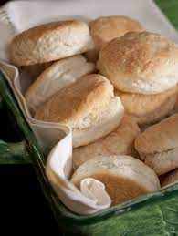

Southern Cream Biscuts

Home
Biscuits are hotly debated, but to me these bring together
all the best aspects of any great biscuit. They are just
salty enough, crispy around the edges, soft and tender
in the middle, and never dry or crumbly. There's nothing
dusty or bland about these beautiful
Southern cream biscuits!
Ingredients
- 2 cups unbleached all-purpose flour
- 1 tablespoon baking powder
- 1 teaspoon sea salt
- ¼ teaspoon baking soda
- 6 tablespoons cold salted butter, cubed
- ½ cup whole milk
- ½ cup heavy whipping cream
- 1 tablespoon sour cream
Directions
- Preheat the oven to 450 degrees F (230 degrees C). Line a
baking sheet with parchment paper.
- Combine flour, baking powder, salt, and baking soda
in the bowl of a food processor; pulse to mix. Drop
cold cubes of butter into the dry mix and pulse just
until mix comes together and forms a ball, about 4 to 5 times;
do not overmix.
- Pour milk, cream, and sour cream into the dry mixture
in the food processor and pulse until it just comes
together and forms a ball, 4 to 5 times. Do not overmix!
- Use a butter knife or sturdy rubber spatula to pry the dough
out of the food processor and turn it onto a well-floured
surface; dough will be very sticky. Don't use your fingers!
They're too hot and will start melting the butter.
- Sprinkle a little flour on top of the dough and gently
knead until it comes together into a ball, about 4 to
5 times. Be gentle and do not overwork the dough;
you are developing flaky layers and not really
mixing it at this point. Gently shape dough into a
rectangle and pat to a 1 1/2-inch thickness.
- Use a non-serrated knife to cut dough into 6 square
biscuits. Place on the prepared baking sheet so
squares are just touching.
- Bake in the preheated oven until golden brown on top,
about 10 minutes. Remove from the oven and cool on a
wire rack. Break biscuits apart just before serving.